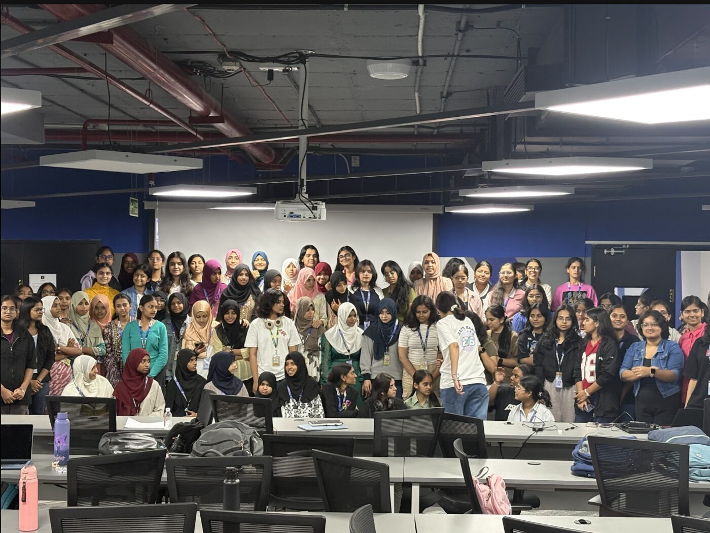
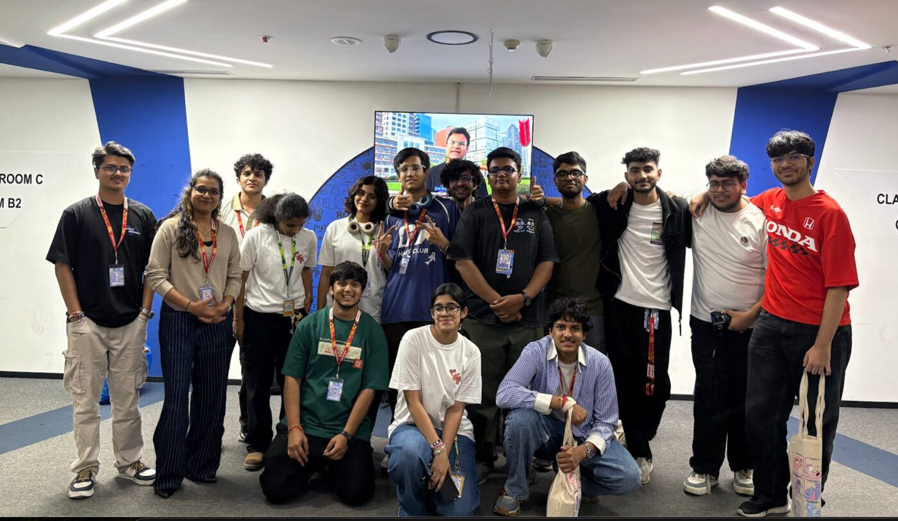
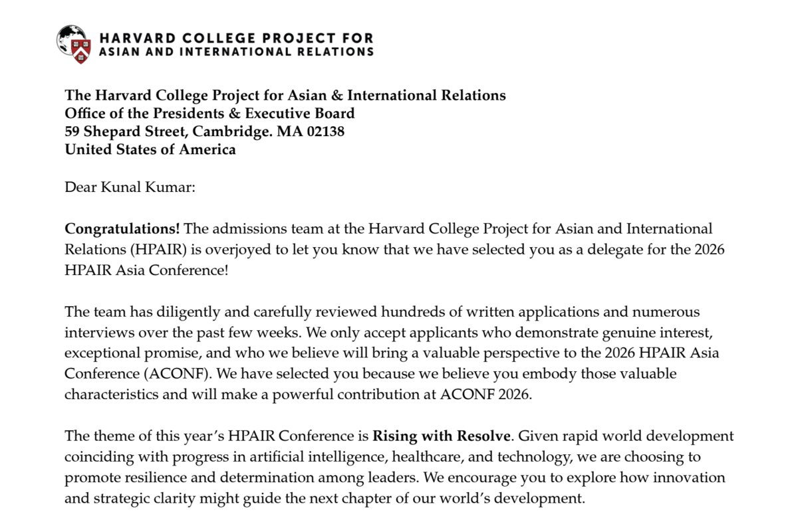
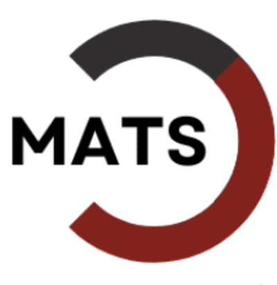
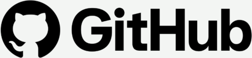
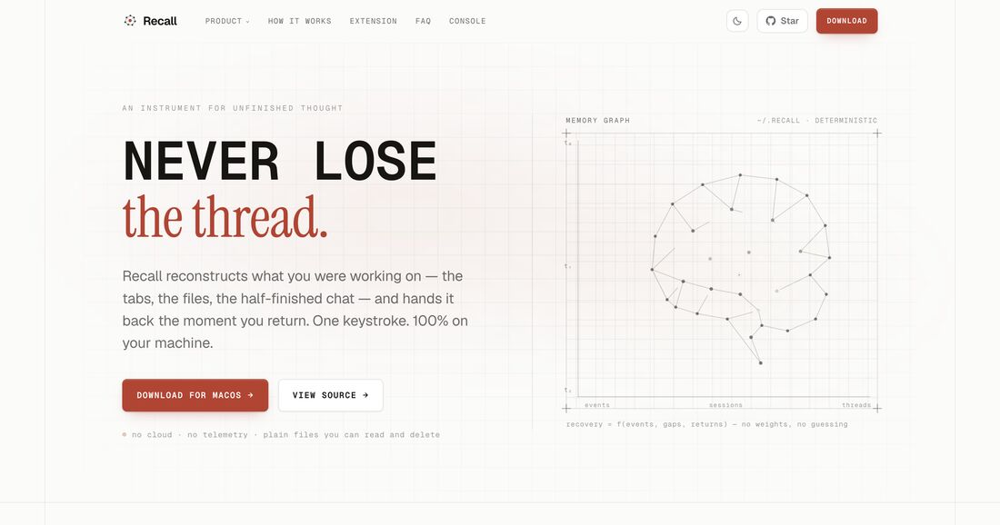
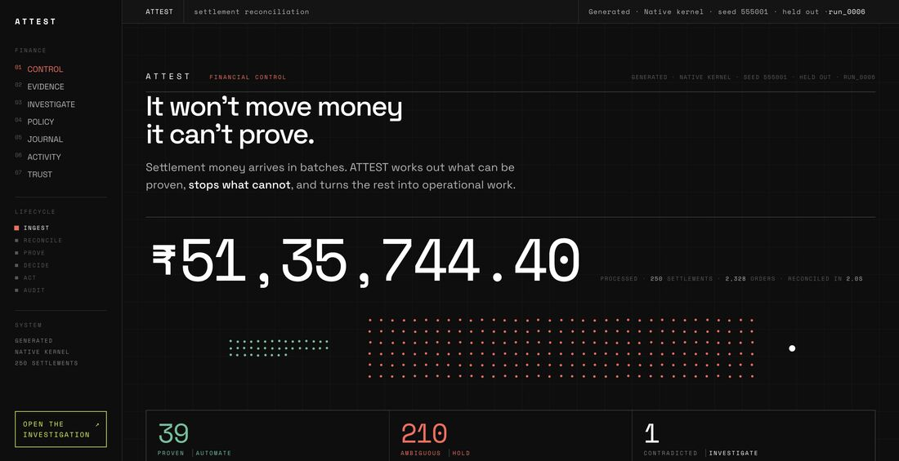
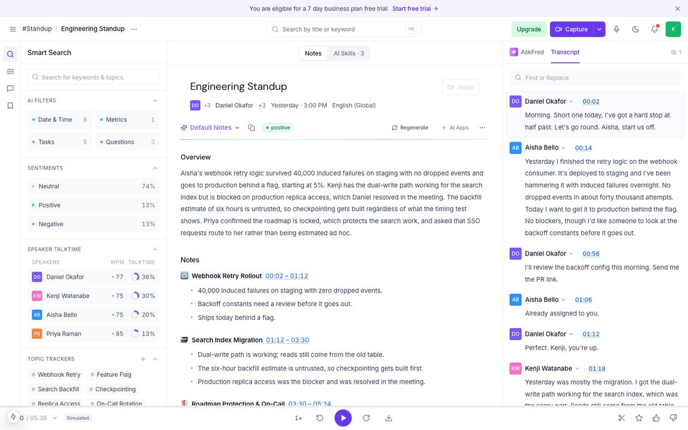
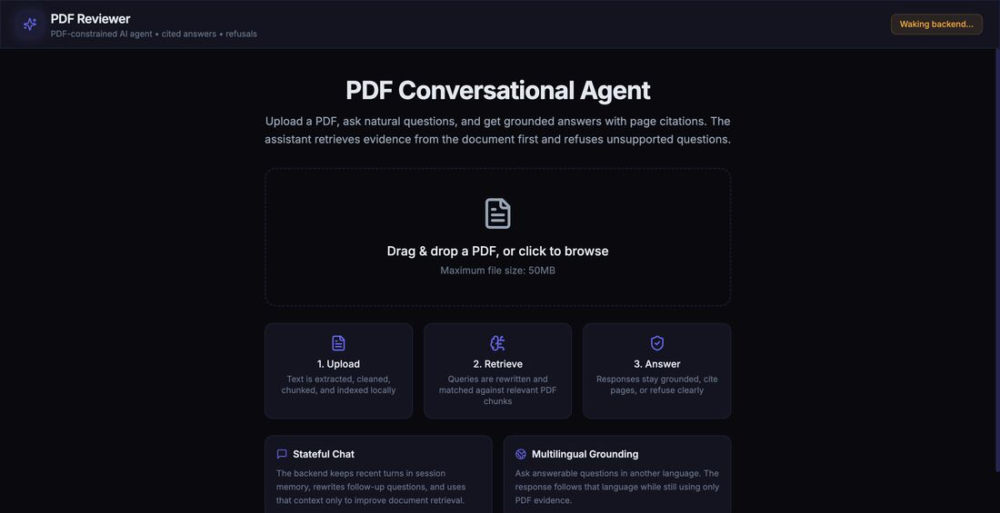
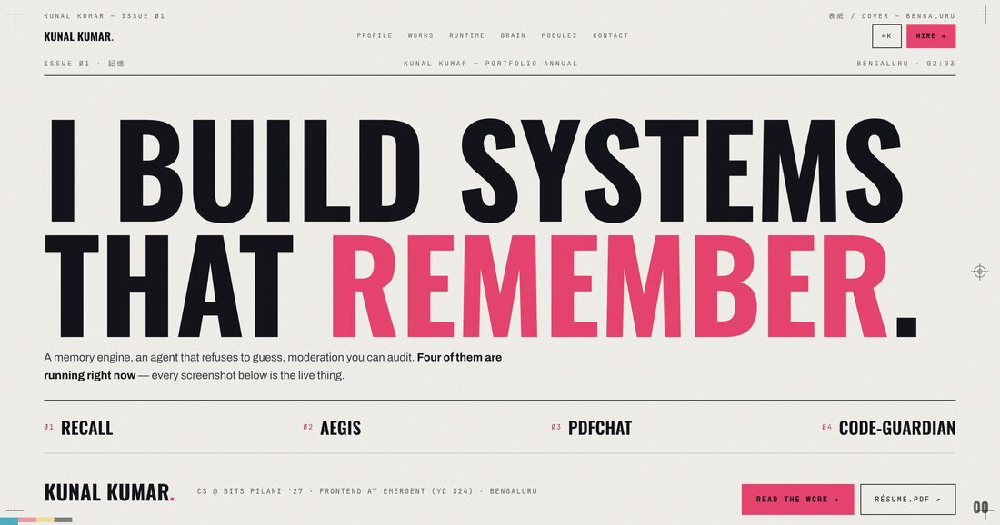

Kunal Kumar · Bengaluru, India
CS, class of 2028. Frontend Engineering Intern at Emergent (YC S24). Through to round 2 at MATS, working on AI safety.
Sixteen months as Growth & Ops Lead at Hack Club, running the technical infrastructure and logistics behind Campfire, Daydream and CodeDay Bengaluru.

Nobody remembers the talks. They remember whether the wifi held, whether there was food at 11pm, and whether the person who turned up alone found somebody to build with.
At this scale every failure is one you did not plan for. So you stop trying to prevent failure and start designing the degradation: what still works, and who finds out first.
Every system I have built since has a documented failure mode. That habit came from a wifi outage, not a textbook.

Across Campfire, Daydream and CodeDay Bengaluru.
Teaching Assistant for Data Structures and Algorithms.
Ops Lead, Open Source Club. Head of Immersions, Aspirants Relations.
Selected as a delegate to the 2026 HPAIR Asia Conference at Harvard, from hundreds of written applications and interviews. The theme was Rising with Resolve.

It put me in rooms with people from completely unrelated fields, arguing about things I had no technical claim on.
Every project I have built started as a problem I could name in one sentence: a lump sum that cannot be decomposed, a train of thought you cannot get back, a July where everything lived in working memory and the result was fog.
I am fairly sure that habit came from that room rather than from any codebase.
One question sits under everything I build: when a capable model proposes something, what is allowed to believe it?

AI safety. Accuracy is measured afterwards; what makes a system safe is structural.
India's first cohort, from over 500 applicants.
ATTEST, across 500 settlements it had never seen. 82.4% correctly refused.

The only work I could not grade in my own favour. 29 patches merged, 10 maintainers, four languages.
Fortran is the one I would point at. I had no reason to know it. Landing a patch meant learning how numerical scientists argue about correctness before writing a line. That is the skill: arriving somewhere I have no standing and becoming useful anyway.
Five projects, one idea, arrived at five separate times before I noticed it had become a thesis.
A memory engine for unfinished work
You do not lose files. You lose continuity. One keystroke brings back the moment, the session and the topic at once. No model in the production path, so the same question can never return two different pasts.

Money that moves only on proof
More than one set of orders can add up to the same credit exactly, and those sets discharge different customers. So it refuses: ₹0.00 moved against the wrong account.

A meeting workspace, rebuilt
A meeting product is not its landing page. It is what happens on the fourth day, when you half-remember a commitment and need to find it.

Cites its pages, or refuses
A confident wrong answer costs more than no answer. Every response either cites the pages it came from or says plainly that the document does not support the question.

Hand-written, no framework, no build step
One HTML file, one script, a command palette, live GitHub and clock feeds, and real deployment screenshots. No mockups anywhere on it.
